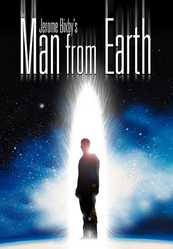

Director: Jerome Bixby
Review by: ഷിജിൽ എം പി
പതിനാലായിരം വർഷങ്ങൾക്ക് മുൻപ് ജനിച്ച ഒരു മനുഷ്യൻ. അയാൾക്ക് സ്വാഭാവിക മരണമില്ല. എപ്പോഴും ചെറുപ്പക്കാരനായി ഇരിക്കാം. കഥ നടക്കുന്ന സമയത്ത് അയാൾ ഒരു യൂണിവേഴ്സിറ്റി പ്രഫസർ ആണ്. വേറൊരിടത്തേക്ക് സ്ഥലം മാറി പോകുന്നു. അതിൻ്റെ ഭാഗമായി യാത്രയയപ്പിന് സഹപ്രവർത്തകർ എത്തുന്നു. അവർ സ്ഥലം മാറി പോകുന്നതിന് കാരണം അന്വേഷിക്കുന്നു. തുർച്ചയായ നിർബന്ധത്തിനു വഴങ്ങി അയാൾ തൻ്റെ കഥ പറയുന്നു.
പതിനാലായിരം വർഷം മുൻപ് ഗുഹാമനുഷ്യനായിരുന്ന അയാൾ പലയിടത്തും അലഞ്ഞ് ഇന്ത്യയിലെത്തുന്നതും ബുദ്ധനെ പരിചയപ്പെടുന്നതും പിന്നീട് റോമിലെത്തുന്നതും ബുദ്ധനിൽ നിന്ന് കിട്ടിയ അറിവുകൾ പകർന്ന് കൊടുക്കാൻ ശ്രമിക്കുന്നതുമൊക്കെയാണ് അയാൾ പറയുന്ന കഥ. പിന്നീട് അയാൾ തന്നെയാണ് ജീസസ് എന്നും പറയുന്നു 😳.
അത്രയും വർഷം മുൻപ് ജനിച്ച ഒരാൾക്ക് ആധുനിക കാലം വരെ ജീവിക്കാൻ പറ്റിയാൽ ഇതിനകം എഴുതപ്പെട്ട ചരിത്രത്തെക്കുറിച്ച് അയാൾക്ക് എന്താണ് പറയാനുണ്ടാകുക - എന്നതാണ് ഈ സിനിമ.
കഥ കേട്ടു നിന്ന സഹപ്രവർത്തകരുടെ കൂട്ടത്തിൽ കടുത്ത ക്രിസ്തീയ വിശ്വാസം വച്ച് പുലർത്തുന്ന ഒരു സ്ത്രീ ഉണ്ടായിരുന്നു. അയാളുടെ കഥ മുഴുവൻ തൻ്റെ ക്രിസ്തുമത വിശ്വാസത്തെ ചോദ്യം ചെയ്യുന്ന ഘട്ടത്തിലേക്കെത്തിയപ്പോൾ അവർക്ക് സഹിക്കാനായില്ല. അവസാനം അവരെ സമാധാനിപ്പിക്കാൻ വേണ്ടി താൻ പറഞ്ഞതെല്ലാം കളവാണെന്ന് പറഞ്ഞ് അയാൾക്ക് തന്നെ കഥ അവസാനിപ്പിക്കേണ്ടി വന്നു. സിനിമ ഈ തരത്തിൽ കുറച്ച് സെൻസിറ്റീവ് ആണ്. സംഭാഷണങ്ങളിലൂടെ മാത്രം മുന്നോട്ട് പോകുന്ന സിനിമ.